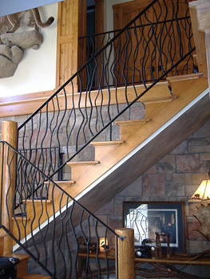
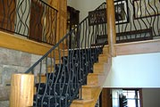
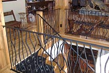
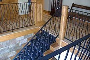
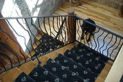
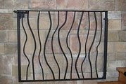
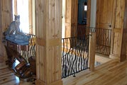

Custom wrought iron railings
- Residential
Stamped wood wrought iron with a natural tree theme. Imported materials are wood-grain stamped steel. Including doggy gate at bottom of stairs (seen below).





